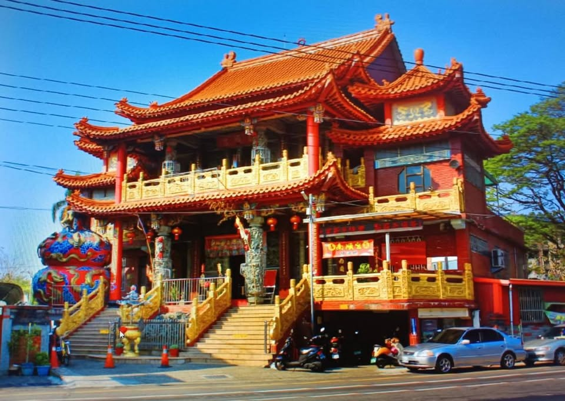
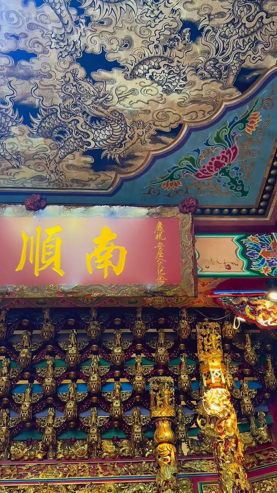

主祀信仰
南順宮天上聖母，地方尊稱「中油媽」。

Faith Origin
南順宮天上聖母的信仰源由，中油公司員工嘉義溶濟廠陳清地先生，於民國43年由朴子配天宮所分靈而來，起先自奉於家中。
民國47年發起籌建廟宇，落成安座，為中油油人子弟世代及社區之信仰中心，「中油媽」尊稱遂由此生。
Visit
南順宮天上聖母，地方尊稱「中油媽」。
嘉義市興業東路399號，鄰近在地生活圈與社區信仰據點。
節慶活動與即時公告以 Facebook 粉絲專頁更新為主。
Updates

Facebook Live Feed
最新公告、活動照片與貼文會由 Facebook 粉絲專頁即時載入。若裝置目前離線，仍可瀏覽本站已快取的基本資訊。
開啟南順宮 Facebook 粉專Gallery